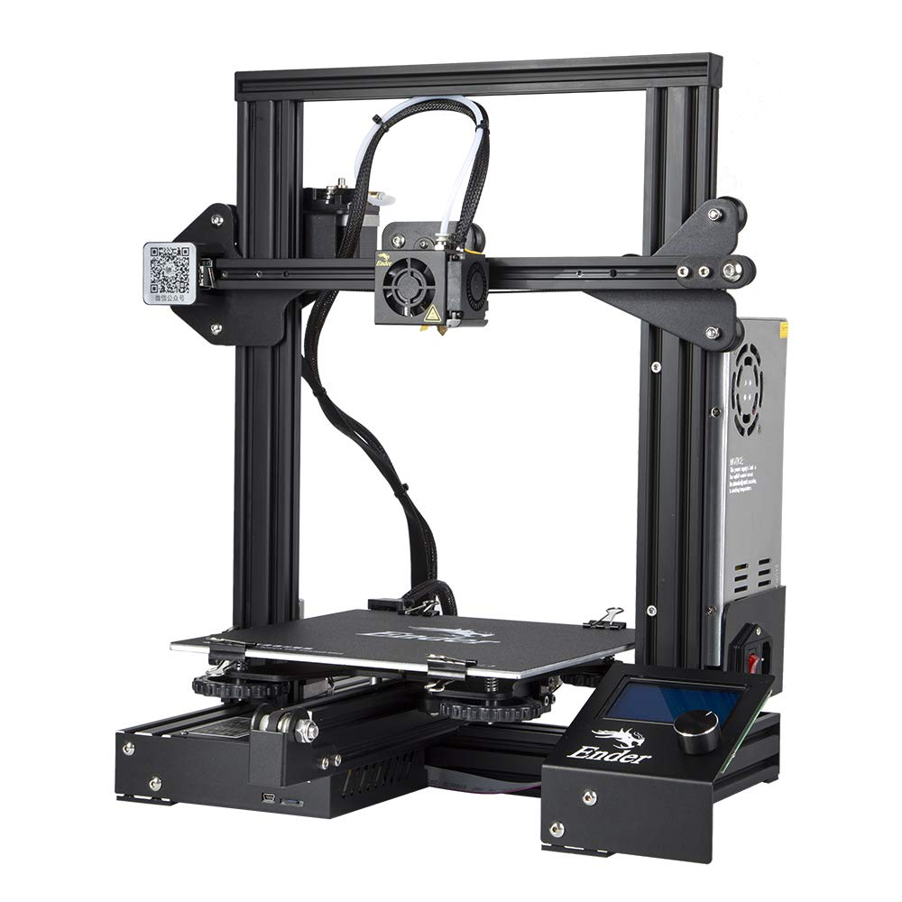
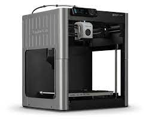
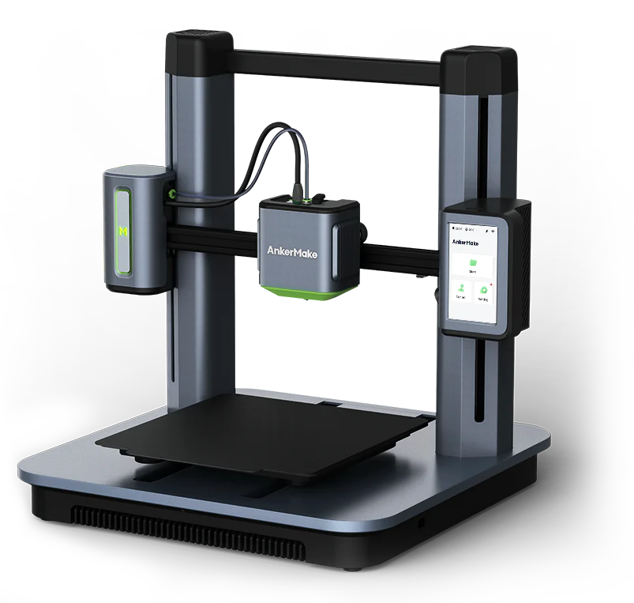
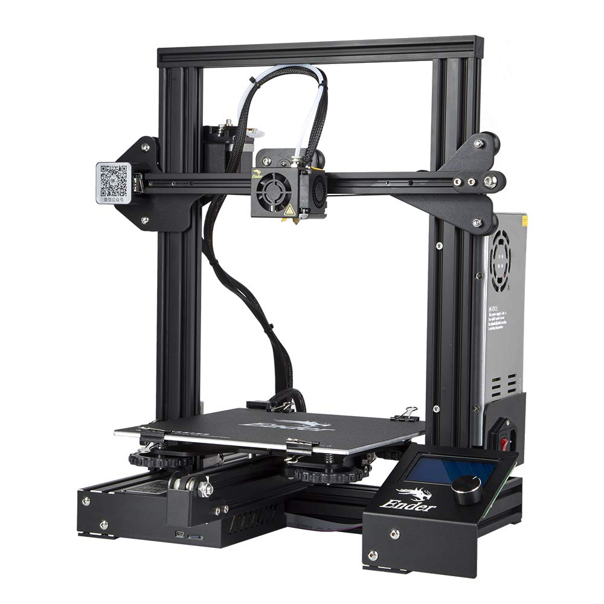
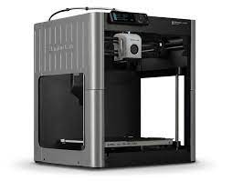
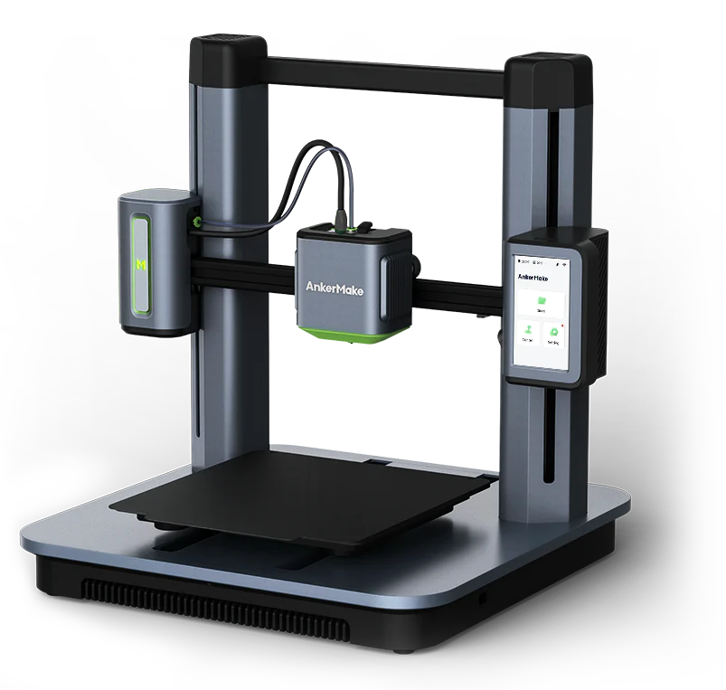

A Guide to 3D Printing
3D Modeling
Before printing anything you need to have a digital model of what you are trying to print. There are various 3D model file types but the most common types are obj and stl
Many people download these models for free from the internet. It is possible to design your own 3D Models using popular 3D modeling software such as:
- TinkerCAD
- OnShape
- SolidWorks
- Autodesk
TinkerCAD or Fusion 360. TinkerCAD is very beginner friendly and it allows you to combine basic shapes. software such as Autodesk is designed for engineers and professionals creating intricate models. Programs like these take a lot of time and effort to master and often cost a lot of money. After designing something with CAD software, you must save your model as one of the previously mentioned file types. This file is then used in the slicer
Gcode Slicing

In order to convert a 3D model into instructions that a 3D printer can understand, a piece of software called a slicer takes the 3D model and converts to a gcode file. Gcode is the language that 3D printers understand. It tells the printer specifications such as layer height and infill.
- Infill: This determines hoe dense the final print will be. A higher infill uses more material and takes longer to print.
- Layer Height: This will tell the printer how high each layer is. Smaller layer greatly increase print time but result in smoother prints.
- Adhesion: Prints with a narrow base may require a layer of adhesion to help it stick to the print bed.
- Support: Any overhangs in a model require a support structure to be printed underneath to prevent the printer from printing in mid air.
- Scale: This setting allows you to make a model bigger or smaller before printing
3D Printers
These are some of the most common 3D printers on the market
 




